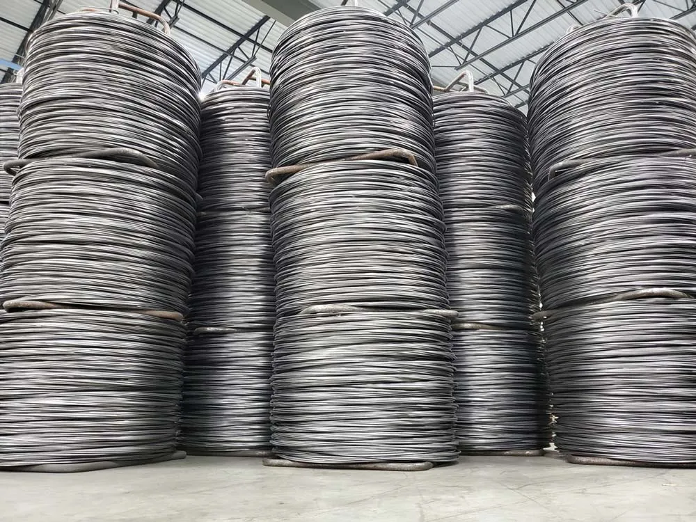
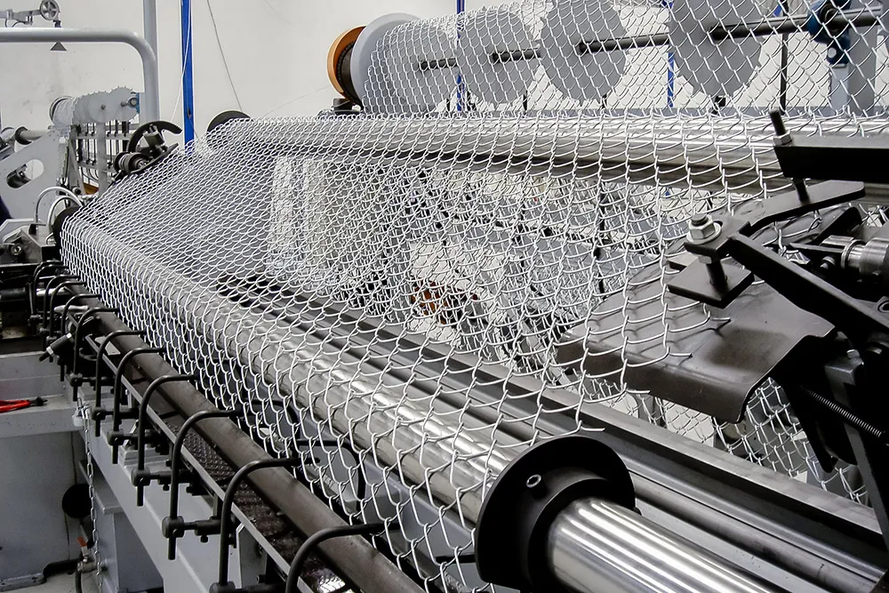
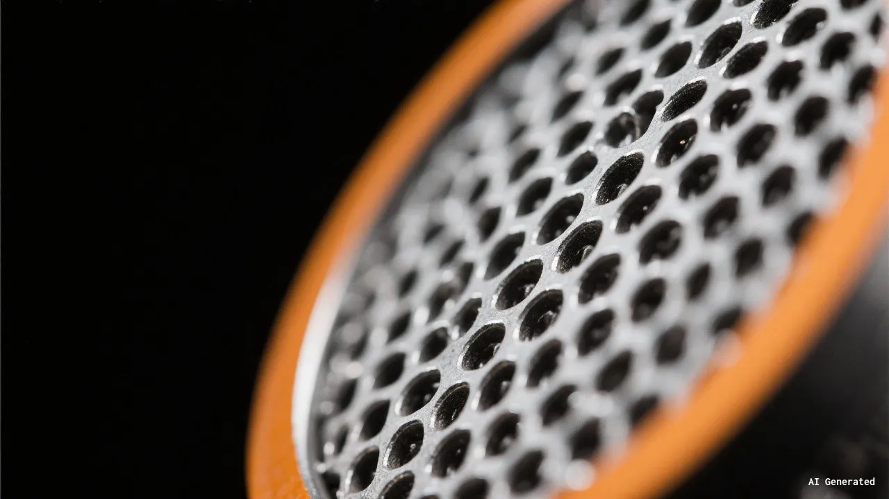
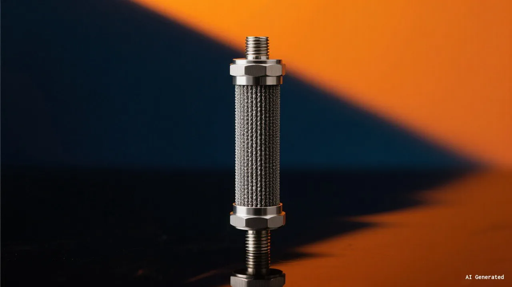

Fabrication Services
Precision metal fabrication for wire mesh, fencing, and structural components — built to your exact specifications with CNC cutting, automated welding, and 30+ years of manufacturing expertise.
Precision Manufacturing,
Engineered to Spec
Our state-of-the-art facility is equipped with CNC cutting machines, automated welding stations, and precision bending equipment to handle projects of any scale. Every piece undergoes rigorous quality inspection to ensure dimensional accuracy and structural integrity.
From standard catalog products to fully bespoke components, our fabrication team transforms raw steel, stainless steel, and aluminum into high-performance wire mesh and fencing products trusted across 30+ countries.

Comprehensive Fabrication Capabilities

Wire Mesh Panel Fabrication
We manufacture welded wire mesh panels in a wide range of wire diameters and aperture sizes. Our automated welding lines produce consistent, high-strength panels suitable for security fencing, architectural cladding, and industrial screening applications.

Custom Frame & Structure Building
From fence posts and gate frames to heavy-duty support structures, our fabrication shop handles all structural steelwork. We cut, drill, weld, and finish frames to match your project requirements with tight tolerances and clean welds.

Chain Link & Woven Mesh Production
Our facility produces chain link fencing and woven wire mesh in galvanized, PVC-coated, and stainless steel variants. We control every stage of production — from wire drawing to weaving — ensuring consistent mesh tension and uniform appearance.

Prototype & Short-Run Manufacturing
Need a custom mesh panel or fencing component that does not fit standard catalogs? Our prototyping service allows you to test designs before committing to full production, saving time and reducing material waste on specialized projects.
How We Fabricate Your Order
Consultation & Review
We review your drawings, specifications, and project requirements to determine the best fabrication approach and materials for your application.
Material Selection & Prep
We source high quality raw materials — carbon steel, stainless steel, or aluminum — and prepare them for fabrication with precise cutting and cleaning.
Fabrication & Assembly
Our skilled operators use CNC equipment and automated welding systems to cut, form, weld, and assemble your components to exact specifications.
Quality Inspection & Dispatch
Every finished piece goes through dimensional checks, weld inspections, and surface quality reviews before being carefully packaged for shipment.
The Kestrel Metal Advantage

ISO 9001 certified quality management system ensures consistent fabrication standards across every production run.
In-house CNC cutting, welding & bending eliminate the need for third-party subcontractors.
Scalable capacity from 10 pieces to 100,000+ pieces with competitive unit pricing at any volume.
Dedicated project managers provide single-point contact from order confirmation through delivery.
Full material traceability with mill test certificates available for all steel and stainless steel products.
Flexible lead times with expedited production options available for time-critical projects.
Ready to Start Your Fabrication Project?
Send us your drawings or specifications and our engineering team will provide a detailed quote within 24 hours.